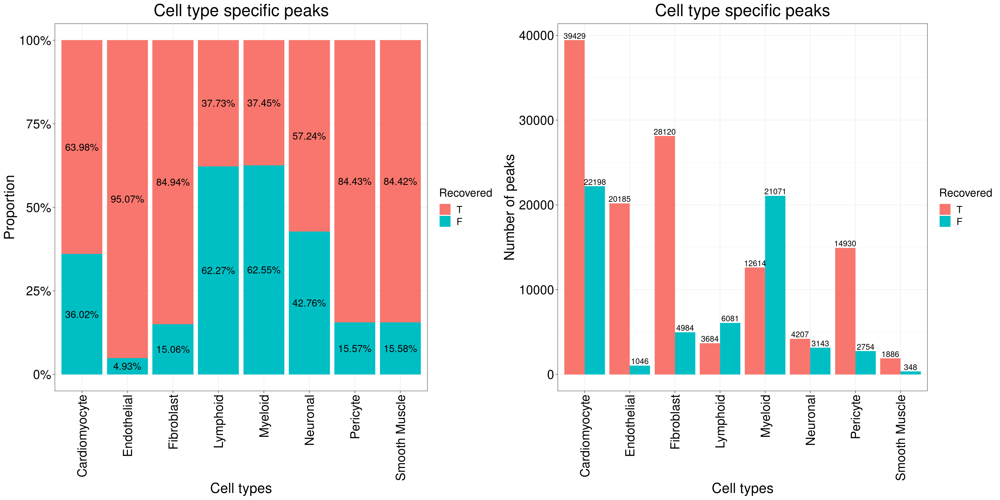

Peak calling for ATAC-seq bulk data
XSun
2022-08-17
Last updated: 2022-08-25
Checks: 6 1
Knit directory: heart_atlas/
This reproducible R Markdown analysis was created with workflowr (version 1.6.2). The Checks tab describes the reproducibility checks that were applied when the results were created. The Past versions tab lists the development history.
The R Markdown is untracked by Git. To know which version of the R Markdown file created these results, you’ll want to first commit it to the Git repo. If you’re still working on the analysis, you can ignore this warning. When you’re finished, you can run wflow_publish to commit the R Markdown file and build the HTML.
Great job! The global environment was empty. Objects defined in the global environment can affect the analysis in your R Markdown file in unknown ways. For reproduciblity it’s best to always run the code in an empty environment.
The command set.seed(20220722) was run prior to running the code in the R Markdown file. Setting a seed ensures that any results that rely on randomness, e.g. subsampling or permutations, are reproducible.
Great job! Recording the operating system, R version, and package versions is critical for reproducibility.
Nice! There were no cached chunks for this analysis, so you can be confident that you successfully produced the results during this run.
Great job! Using relative paths to the files within your workflowr project makes it easier to run your code on other machines.
Great! You are using Git for version control. Tracking code development and connecting the code version to the results is critical for reproducibility.
The results in this page were generated with repository version 838aa0f. See the Past versions tab to see a history of the changes made to the R Markdown and HTML files.
Note that you need to be careful to ensure that all relevant files for the analysis have been committed to Git prior to generating the results (you can use wflow_publish or wflow_git_commit). workflowr only checks the R Markdown file, but you know if there are other scripts or data files that it depends on. Below is the status of the Git repository when the results were generated:
Untracked files:
Untracked: analysis/ATAC_bulk_peak.Rmd
Unstaged changes:
Modified: analysis/index.Rmd
Note that any generated files, e.g. HTML, png, CSS, etc., are not included in this status report because it is ok for generated content to have uncommitted changes.
There are no past versions. Publish this analysis with wflow_publish() to start tracking its development.
Introduction
We annotated all cells as the same cluster and did peak calling on the whole data set.
Then, we compare union set and earlier peaks called on cell-type-specific dataset.
Peak calling
Same settings with Alan’s.
projHeart<- addReproduciblePeakSet(ArchRProj = projHeart, maxPeaks = 500000,groupBy = "CLUSTER_SET", pathToMacs2 = macs2, cutOff = 0.01, verbose = T)Number of cells: 26,714
Number of used cells: 16,854
203,876 peaks were found.
Comparing with earlier peaks
Comparing with peaks not cell-type-specific
The peaks for each cell type here are not cell type specific.
The right pannel below shows the proportion of recovered and unrecovered peaks for each cell type.
The left pannel below shows the number of recovered and unrecovered peaks for each cell type.

The plot below shows the relationship between number of peaks for each cell type and the proportion of recovered peaks in bulk data

We also computed odd ratio according to :
\[ OR = \frac{\frac{P(OCR_{2}|OCR_{1})}{1-P(OCR_{2}|OCR_{1})}}{\frac{P(OCR_{2}|\overline{OCR_{1}})}{1-P(OCR_{2}|\overline{OCR_{1}})}} \] where \(OCR_{1}\) is the our bulk peaks and \(OCR_{2}\) are peaks for each cell type (not cell type specific). We sampled 2,038,760 (203,876 *10) unoverlapping regions (width = 501 which is the same with our peaks) from whole genome (hg38, blacklist and gaps were excluded) and used these regions as \(\overline{OCR_{1}}\) .
The plots below shows the distribution of the width of the overlaps.

We also tried to sample random regions with the same size of \(OCR_{1}\) and used as \(\overline{OCR_{1}}\). The results are similar with earlier ones.
Comparing with cell-type-specific peaks
The peaks for each cell type here are cell type specific.
The right pannel below shows the proportion of recovered and unrecovered peaks for each cell type.
The left pannel below shows the number of recovered and unrecovered peaks for each cell type.

The plot below shows the relationship between number of peaks for each cell type and the proportion of recovered peaks in bulk data
Odd ratio:
The plots below shows the distribution of the width of the overlaps.

We also tried to sample random regions with the same size of \(OCR_{1}\) and used as \(\overline{OCR_{1}}\). The results are similar with earlier ones.
sessionInfo()R version 4.0.4 (2021-02-15)
Platform: x86_64-pc-linux-gnu (64-bit)
Running under: Scientific Linux 7.4 (Nitrogen)
Matrix products: default
BLAS/LAPACK: /software/openblas-0.3.13-el7-x86_64/lib/libopenblas_haswellp-r0.3.13.so
locale:
[1] LC_CTYPE=en_US.UTF-8 LC_NUMERIC=C
[3] LC_TIME=en_US.UTF-8 LC_COLLATE=en_US.UTF-8
[5] LC_MONETARY=en_US.UTF-8 LC_MESSAGES=en_US.UTF-8
[7] LC_PAPER=en_US.UTF-8 LC_NAME=C
[9] LC_ADDRESS=C LC_TELEPHONE=C
[11] LC_MEASUREMENT=en_US.UTF-8 LC_IDENTIFICATION=C
attached base packages:
[1] grid parallel stats4 stats graphics grDevices utils
[8] datasets methods base
other attached packages:
[1] genomation_1.22.0 gridExtra_2.3
[3] reshape_0.8.8 ArchR_1.0.1
[5] magrittr_2.0.1 rhdf5_2.34.0
[7] Matrix_1.4-0 data.table_1.14.0
[9] SummarizedExperiment_1.20.0 Biobase_2.50.0
[11] GenomicRanges_1.42.0 GenomeInfoDb_1.26.7
[13] IRanges_2.24.1 S4Vectors_0.28.1
[15] BiocGenerics_0.36.1 MatrixGenerics_1.2.1
[17] matrixStats_0.58.0 ggplot2_3.3.5
loaded via a namespace (and not attached):
[1] bitops_1.0-6 fs_1.5.0 rprojroot_2.0.2
[4] tools_4.0.4 bslib_0.2.4 utf8_1.2.2
[7] R6_2.5.0 DT_0.17 KernSmooth_2.23-18
[10] DBI_1.1.1 colorspace_2.0-0 rhdf5filters_1.2.1
[13] seqPattern_1.22.0 withr_2.4.3 tidyselect_1.1.0
[16] compiler_4.0.4 git2r_0.28.0 cli_3.3.0
[19] DelayedArray_0.16.3 rtracklayer_1.50.0 labeling_0.4.2
[22] sass_0.3.1 scales_1.1.1 readr_1.4.0
[25] stringr_1.4.0 digest_0.6.27 Rsamtools_2.6.0
[28] rmarkdown_2.7 XVector_0.30.0 pkgconfig_2.0.3
[31] htmltools_0.5.1.1 plotrix_3.8-2 highr_0.8
[34] BSgenome_1.58.0 htmlwidgets_1.5.3 rlang_0.4.12
[37] rstudioapi_0.13 impute_1.64.0 jquerylib_0.1.3
[40] generics_0.1.0 farver_2.1.0 jsonlite_1.7.2
[43] crosstalk_1.1.1 BiocParallel_1.24.1 dplyr_1.0.7
[46] RCurl_1.98-1.5 GenomeInfoDbData_1.2.4 Rcpp_1.0.8
[49] munsell_0.5.0 Rhdf5lib_1.12.1 fansi_0.4.2
[52] lifecycle_1.0.0 stringi_1.5.3 yaml_2.2.1
[55] zlibbioc_1.36.0 plyr_1.8.6 promises_1.2.0.1
[58] crayon_1.4.1 lattice_0.20-41 Biostrings_2.58.0
[61] hms_1.0.0 knitr_1.31 pillar_1.6.5
[64] reshape2_1.4.4 XML_3.99-0.8 glue_1.6.2
[67] evaluate_0.14 vctrs_0.3.8 httpuv_1.5.5
[70] gtable_0.3.0 purrr_0.3.4 assertthat_0.2.1
[73] xfun_0.29 gridBase_0.4-7 later_1.1.0.1
[76] tibble_3.1.6 GenomicAlignments_1.26.0 workflowr_1.6.2
[79] ellipsis_0.3.2